Servicios ofrecidos por AWS para el estudio de la certificación Cloud Practitioner ofrecida por Amazon Web Services
Amazon Elastic Compute Cloud (Amazon EC2)

Es un servicio de cómputo en la nube, con esquema de pago pay-as-you-go. Un servidor de AWS puede hostear múltiples instancias de máquinas virtuales completamente isoladas, esto es llamado multy-tenancy y es orquestado por un hypervisor.
Tipos de Instancia
- General Purpose Instance Son las instancias de uso general que utilizand de manera proporcional todos sus recursos, útil para application servers, gaming servers, backend server, small and médium databases
- Compute Optimized Instance Son instancias que necesitan de un alto poder de procesamiento, es útil para aplicaciones de computo intensivo como application servers, dedicated gaming servers y batch processing workloads que requieren de muchas transacciones en un solo grupo
- Memory Optimized Son instancias donde la memoria RAM es más importante, es útil para aumentar el performance en aplicaciones que requieran procesar grandes datasets en memoria.
- Accelerated Computing instances Son instancias que hacen uso de GPUS, o aceleradores de hardware para solucionar tareas pesadas como, calculo de número flotante, procesamiento de gráficos, machine learning.
- Storage Optimized Instance Instancias que son diseñadas para cargas de trabajo donde se requiere un alto IOPS Input Ouput Operations Per Second. Tareas como Distributed file systems, data warehousing applications, y high frecuency online transaction processing son lo más utlizados.
Amazon EC2 Pricing
- On demand: Es el pago por defecto a la hora de crear instancia, es recomendado para workloads que son de corta duración como son testeos, etc.
- Reserved Instances: Permite reducir el costo dependiendo de ciertos requisitos, por ejemplo un contrato de 1-3 años para una instancia, obteniendo hasta un 72% de descuento. Cualquier uso más allá del contrato es cargado con precio regular On-demand.
- Spot Instances:Son ideales para cargas de trabajo cortas y que permiten ser interrumpidas, es la más economica opción, sin embargo, aws puede requerir de la instancia en cualquier momento. La duración de estas instancias es máximo 24H de manera continua. La ventana de tiempo cuando la piden es de 2 minutos.
- Dedicated hosts: Son servidores físicos que son puestos en su totalidad para el usuario, usualmente son requeridos para cumplir requerimientos y políticas y es sole-tenant es decir no habrá nadie más utilizando dicho servidor.
Es posible utilizar un per-socket, per-core, per-vm software licences para mantener requerimientos, Dedicated host son los más costosos.
Amazon EC2 Auto-Scaling
Auto-scaling es un servicio que permite escalar de manera automática instancias de EC2 para cumplir la demanda de acceso a los servicios. Mediante AutoSCaling tenemos dos opciones:
- Dynamic Scaling:Que responde al cambio de la demanda
- Predictive Scaling: Automaticamente asigna el número de instancias basado en una predición de demanda.
Si no se configura el desired capacity se toma por defecto como el mínimo, la cantidad mínima de instancias es 1, por tanto, no puede escalar a cero. La capacidad máxima de escalamiento puede ser hasta 4 instancias máximo.
Auto-Scaling utiliza instancias EC2 por tanto solo se hará cobró de las instancias que estén en uso.
Elastic Load Balacing
Es un servicio de AWS que distribuye de manera automática todo el tráfico a través de múltiples recursos como Instancias de EC2.
Un Load Balancer actúa como único punto de contacto entre todo el tráfico proveniente de internet hacia los recursos AWS, es un servicio Regional y altamente disponible por lo cual no deberemos preocuparnos mucho de cómo funciona detrás de bambalinas.
ELB escala de manera automática, por tanto, mientras el tráfico crezca, de igual forma lo hará ELB para direccionar el tráfico sin cambios en su cobro por hora.
Debido a que ELB es regional, es una única URL para frontend, luego ELB direcciona todo el tráfico hacia el backend, el frontend no le interesa el backedn y viceversa, es por tanto una decoupled architecture.
Amazon Simple Queue Service (Amazon SQS)
Es un servicio de encolamiento de mensajes message queuing service.
Utilizando SQS podemos enviar,guardar,y recibir mensajes entre aplicaciones y componentes de software sin tener que perder mensajes o requerir que el otro servicio este siempre disponible. Es decir un servicio envia un mensaje a una cola, y un usuario toma el mensaje de la cola, lo procesa, y luego elimina el mensaje de la cola.
La información contenida en el mensaje es llamada payload y está protegida hasta el delivery del mensaje.
Amazon Simple Notification Service (Amazon SNS)
Es un servicio publish/subscribe, SNS utiliza Topics a los cuales un Publisher publica un mensaje hacia los suscriptores de dicho Topic. Es muy similar a SQS para enviar mensajes a servicio, pero también puede enviar notificaciones a usuarios finales mediante el model pub/sub. Pueden ser enviados utilizando mobile push, sms, y emails.
AWS Lambda
Es un servicio que permite correr código sin la necesidad de administrar servidores ni infraestructura. (Serverless)
Lambda utiliza las Lambda Functions que son snippets de código que son activados mediante un trigger, cuando el trigger es detectado, el código es puesto en funcionamiento de manera automática hasta dar una respuesta, es altamente escalable, y el mantenimiento es realizado por AWS. Es ideal para código que no toma más de 15 minutos en ejecutarse, como web backends, handling requests, etc.
Amazon Elastic Container Service (Amazon ECS)
Es un servicio de administración de contenedores altamente escalable, y altamente disponible que permite correr y escalar aplicaciones en contenedores en AWS.
Amazon Elastic Kubernetes Services (Amazon EKS)
Es un servicio utilizado para correr Kubernetes en AWS.
AWS Fargate
ECS Y EKS pueden correr sobre instancias de EC2, pero si uno no quiere preocuparse por la infraestructura que hay detrás para hostear los contenedores Fargate es la solución, ya que es un motor de cómputo serverless para contenedores (Serverless compute engine). Funciona tanto con ECS como con EKS.
AWS Outpost
Permite extender la infraestructura de AWS a un data-centre propio siendo este completamente administrado por AWS pero separado en nuestro propio lugar.
AWS Elastic Beanstalk
Es un servicio que permite hacer deploy de código de manera sencilla provisionando el código y la configuración deseada realizando las siguientes tareas:
- Ajustando capacidad
- Balanceo de carga
- Escalado Automatico
- Aplicación de monitoreo de salud
También permite guardar de manera sencilla la configuración de ambiente para así ser desplegada nuevamente, Beanstalk nos da la conveniencia de no tener que provisionar y administrar los recursos de manera separada mientras que obtenemos visibilidad y control de los recursos que se encuentran por debajo.
AWS CloudFormation
Es un servicio que permite realizar Infraestructura como código IaaC, esto significa que podemos construir ambientes mediante líneas de código en vez de utilizar la consola de AWS para provisionar de manera individual los recursos.
Permite definir una gran cantidad de servicios mediante una forma declarativa utilizando lenguajes como JSON y YAML, esto son llamados Cloudformation templates. Una forma declarativa permite construir un servicio sion tener que especificar como construirlo en detalle.
Amazon Virtual Private Cloud (Amazon VPC)
Es un servicio de networking que permite separar nuestra infraestructura del resto de componentes de AWS mediante la asignación de un rango de direcciones IP privadas.
Se pueden crear subnets dentro de la VPC que son los que contienen los recursos como las instancias EC2, estas subnets están conformadas por chunks de direcciones IP que permiten agrupar los recursos de manera conjunta.
Existen 2 subnets importantes, Public Subnet contiene recursos que pueden ser accedidos por el público general mediante internet, como una pagina web. Las private subnets contienen recursos que solamente son accesible a través de la red privada, tales como bases de datos que solamente deben ser accedidos por los recursos internos.
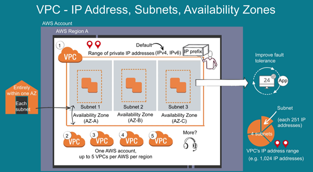Internet Gateway (IGW)
Es un servicio que permitirá la conexión de los recursos (VPC) e internet.
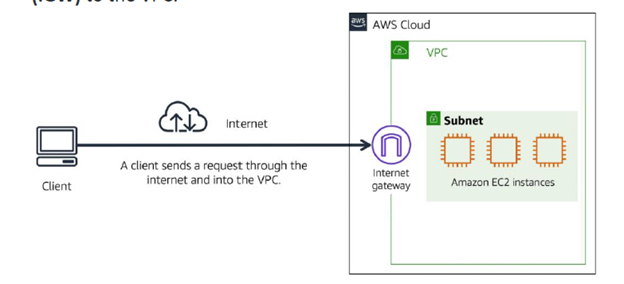Virtual Private Gateway
Es un servicio para poder conectarse a los recursos de manera privada dentro de una red propia, como una aplicación de HR o el backend de una base de datos. Es decir, que permitiremos tráfico de aquellas personas que se encuentren dentro de redes aprobadas, no de internet.
Permite crear una conexión privada, por ejemplo, entre un data centre on-premise y la VPC, es decir una VPN.
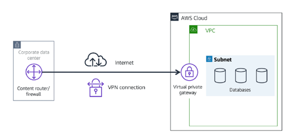Direct Connect
Es un servicio que permite establecer una conexión privada entre nuestro data-centre y la VPC.
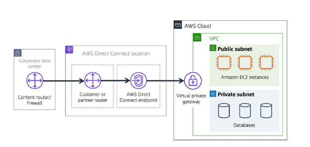Es muy útil cuando se quiere evitar cualquier problema de bandwidth en la conexión.
Es importante recalcar que una VPC puede tener múltiples tipos de gateways para múltiples recursos que estén en distintas subnets.
Network Access Control List (ACL)
Es un servicio que actúa de firewall lógico a nivel de subred. Cada cuenta de AWS incluye una ACL por defecto que permite todo el tráfico entrante y saliente. Al momento de crear una custom ACL está estará por defecto negando todo el tráfico entrante y saliente, tocando así añadir las reglas para permitir el tráfico deseado.
Las ACL realizando un filtrado Stateless, es decir no tienen memoria de las revisiones realizadas anteriormente y preguntaran a un mismo paquete a la hora de entrar y salir de una subnet. Este firewall no actúa a nivel de instancias por tanto si un paquete logra pasar este control, aún puede acceder a cualquier instancia que se encuentre en la subnet.
Security Groups
Es un servicio que actual de firewall lógico a nivel de instancia. Por defecto a la hora de crear una instancia, el security group niega todo el trafico entrante a la instancia pero permite todo el tráfico que sale de la instancia. Este firewall es importante debido a que si una instancia es un servidor web, se espera que solamente maneje trafico HTTP en vez de otro tipo de trafico.
Al contrarior que las ACL los security groups son stateful, es decir que tienen memoria de los chequeos realizados anteriormente, por tanto si un paquete logra pasar una vez este control, no será chequeado nuevamente si pasa de nuevo por el mismo control.
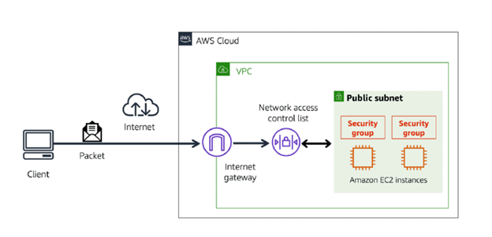Amazon Route 53
Es un servicio web DNS que permite realizar traducción entre los nombres de dominio y las direcciones IP de los recursos. También permite direccionar trafico a distintos endpoints utilizando políticas de ruteo tales como:
- Latency-based
- Geolocation
- Geoproximity
- Weighted
- Failover
Amazon Elastic Block Stores (Amazon EBS)
Es un servicio que provee volúmenes de almacenamiento a nivel de bloques utilizado para ser asociados a las instancias EC2, toda la información que este guardada en este volumen una vez la instancia sea detenida o terminada perdurará.
Se pueden crear snapshots de la EBS para mantener una mayor durabilidad en los datos. EBS está asociado a una única AZ y por tanto la EC2 debe residir en la misma zona de disponibilidad.
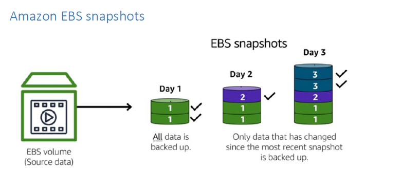Amazon Simple Storage Service (Amazon S3)
Es un servicio de almacenamiento a nivel de objetos, es ideal para guardar cualquier tipo de archivos en un bucket. Los objetos están conformados por la data, la metadata y una key.
La capacidad máxima de un archivo es de 5Tb y el espacio de almacenamiento es virtualmente ilimitado. Se pueden seguir un versionamiento de los objetos por si estos sufren cambios.
S3 Standard
- Diseñado para acceso frecuente a la información
- Guarda la información en mínimo 3 Zonas de disponibilidad
- Ideal para alojar sitios web estáticos.
S3 Standar-Infrequent Access (S3 Standard IA)
- Idea para información que no es accedida de manera frecuente
- Similar a Estándar pero con menor costo.
- Ideal para guardar backups, disaster recovery files o cualquier objeto que require almacenamiento a largo plazo.
S3 One Zone-infrequent Access (S3 One-zone IA)
Similar a Standard IA pero en una única locación, no cuenta con AH pero sus precios y costos son mucho menores.
S3 Intelligent-Tiering
- Es un servicio en el cual no conocemos exactamente el patrón de acceso a la información.
- Requiere de una comisión extra para monitorear y automatizar ls ubicación de los objetos.
- Si no ha accedido a un objeto en 30 días consecutivos IT moverá el objeto a la IA tier, si es accedido, será movido de nuevo a Standard.
S3 Glacier
- Es un servicio para archivar datos por largos periodos de tiempo a bajo costo.
- Permite recuperar la información en minutos a horas.
- Ideal para guardar data por muchos años debido a auditorias. Se pueden asignar políticas para su almacenamiento como vault lock policy.
S3 Glacier Deep Archive
Es el servicio más économico para almacenamiento y en el cual el acceso a los datos no se realizará por mucho mucho tiempo. Permite recuperar la información en las próximas 12 horas.
Amazon Elastic File System (Amazon EFS)
Es un servicio de sistema de archivos altamente escalable utilizado para ser accedido desde múltiples instancias a un directorio de archivos al mismo tiempo. Este servicio es regional por lo cual puede ser accedido desde cualquier parte.
Amazon Relational Database Service (Amazon RDS)
Es un servicio fully managed para correr bases de datos relacionales en AWS. Soporta 6 motores de bases de datos.
- Aurora
- PostgreSQL
- MySQL
- MariaDB
- Oracle
- Microsoft SQL Server
Amazon Aurora
Es una base de datos de clase empresarial, es compatible con MySQL y PostgreSQL pero hasta 5 veces más rápido. Este servicio es el más completo y fully managed option por AWS. Permite hasta 6 copias de la información a través de 3 AZ y continous backups hacia S3. De igual forma permite desplegar hasta 15 read-replicas.
Amazon DynamoDB
Es una base de datos no relacional para archivos de tipo key-value y para documentos, es un servicio serverless y altamente escalable. Redunda la data a través de distintas AZ y mirros la data a través de múltiples discos debajo de capa.
Amazon Redshift
Es un servicio de data warehouse utilizado para big data analytics. Permite correr SQL contra exabytes de unstructed data corriendo en data lakes.
AWS Database Migration Service (AWS DMS)
Es un servicio que permite migrar bases de datos relacionales, no relacionales y otros tipos de almacenamiento de datos.
Las bases de datos de origen y destino pueden ser heterogéneas o homogéneas. Durante la migración la base de datos de origen permanece operacional por lo cual el downtime es reducido. Para las bases de datos heterogéneas se requiere de un paso extra el cual es la conversión del Squema.
Amazon DocumentDB
Es un servicio de base de datos para documentos, soporta MongoDB.
Amazon Neptune
Es una base de datos de grafos
Amazon Quantum Ledger Database (Amazon QLD)
Es una base de datos ledger immutable, es utilizado para observar toda la historia de todos los cambios que se han realizado a la información de aplicación
Amazon Managed Blockchain
Es un servicio que permite crear y administrar blockchain networks con frameworks open-source.
Amazon Elasticache
Es un servicio que permite agregar capas de cache en la parte top de la base de datos para mejorar los tiempos de lectura de las solicitudes más frecuentes. Existe Redis y Memcached
Amazon DynamoDB Accelerator (DAX)
Es un servicio que permite agregar in-memory cache a DynamoDB, ayuda a mejorar de manera dramática los tiempos de lectura de las bases de datos no relacionales de milisegundos a microsegundos
AWS Identity and Access Management (IAM)
Es un servicio que permite administrar el acceso a los distintos recursos y servicios ofrecidos a AWS.
- IAM User,Groups, and roles
- IAM Policies
- Multi-factor Authentication
Los IAM user representan personas o aplicaciones que interactúan con los recursos y servicios, por defecto no tienen ningún permiso.
IAM Policies son documentos JSON que permiten o niegan permisos a los recursos.
IAM Group son agrupaciones de usuarios que manejarán la misma cantidad de permisos.
IAM Roles son identidades que se pueden asumir para obtener acceso temporal a permisos.
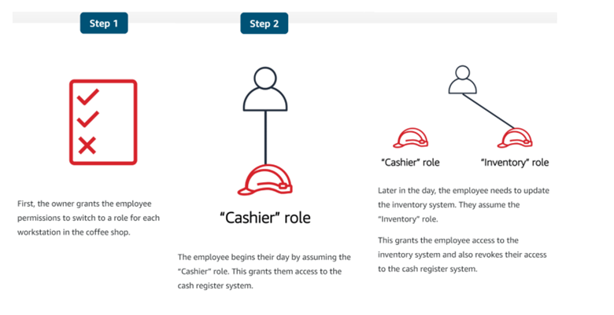AWS Organizations
Permite consolidar y administrar múltiples cuentas AWS en una misma locación. Utilizando Organizations se pueden crear Service control policies SCP para poner restricciones a los servicios, recursos etc. Se puede aplicar estos SCP a nivel de Organización, Indivual o a Organizational Units.
SCP afecta a todos los usuarios IAM incluido el usuario root. Las políticas IAM por otro lado no afectan a los usuarios root.
Organizational Units (OU)
Permite implementar agrupaciones jerárquicas de group accounts en unidades organizaciones. Cuando se aplica una política a una OU las cuentas que hagan parte de dicha OU heredarán los mismos permisos especificados en la política.
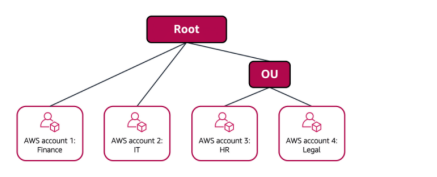AWS Artifact
Es un servicio que permite acceder a todas las auditorias on-demand y security and compliance reports y select online agreements.
AWS Artifact agreements permite firmar un acuerdo con aws para cumplir ciertos standares. Podemos revisar aceptar y administrar agreements para una cuenta individual o para todas las cuentas en AWS organizations.
Aws Artifact reports permite acceder a los reports de los auditors de terceros para revisar y asegurarse que todo lo planteado se está cumpliendo.
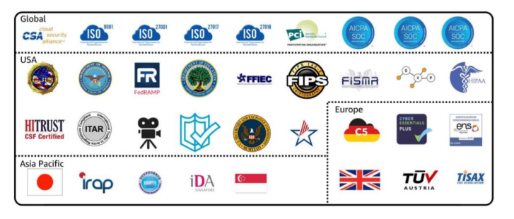Customer Compliance Centre
Contiene los recursos que permiten aprender más acerca de AWS Compliance.
- AWS responde a key complance questions
- Un resumen de AWS risks and compliance
- Checklist de auditorias de seguridad
- Learning path para aprender sobre auditorias
AWS Shield
Es un servicio utilizado para mitigar ataques de tipo DDOS. Existen 2 versiones
- Standard: Sin costo, protege de los ataques más comunes DDOS.
- Advanced: Con costo, servicio que provee un diagnostico detallado de los ataques DDOS y la habilidad de detectar y mitigar sofisticados ataques DDOS.
AWS Key Managament Service
Es un servicio para realizar operaciones criptográficas a través de llaves. KMS es utilizado para crear, administrar y usar llaves criptograficas, también es utilizado para usar llaves a lo largo de un rango de servicios en las aplicaciones.
Es buena práctica utilizar encripción en reposo y en tránsito para asegurar la información.
AWS Web Application Firewall (AWF)
Es un servicio utilizado como firewall de aplicaciones web que permite monitorear las solicitudes de red que llegan a la aplicación web. Funciona utilizando web Access control list ACL para proteger los recursos de AWS.
Amazon Inspector
Es un servicio que permite realizar pruebas de seguridad de manera automática. Revisa si la aplicación tiene vulnerabilidades de seguridad y desviaciones de las mejores prácticas.
Amazon Guarduty
Es un servicio que provee detección inteligente contra las amenazas en la infraestructura y recursos. Identifica daños chequeando de manera continua la actividad y el comportamiento de las cuentas en un ambiente de AWS.
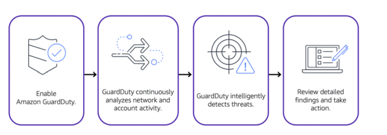Detecta direcciones IP maliciosas, detecciones anormales, y machine learning para identificar las amenazas de manera más precisa.
Amazon Cloudwatch
Es un servicio web que permite monitorear varias métricas de los recursos y configurar alarmas basadas en dichas métricas.
Por ejemplo, detener una instancia EC2 cuando el % de utilización de un recurso permanece debajo de cierto umbral por una cantidad de tiempo considerable, también se puede integrar con SNS
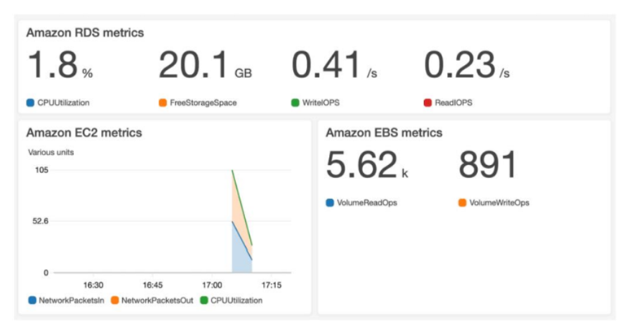AWS Cloudtrail
Es un servicio de auditoría que registra las llamadas a las API en la cuenta, la información guardada incluye el momento de la llamada de la API, la dirección IP de origen, y más. Permite ver una historia completa de la actividad de los usuarios en y llamadas de API. Todos los eventos son típicamente actualizados cada 15 minutos.
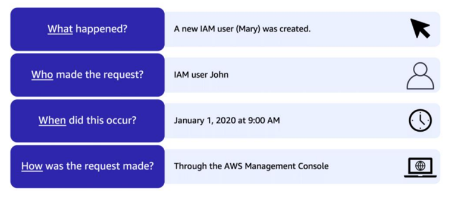Cloudtrail Insights
Se puede también habilitar insights, es una feature adicional que permite automáticamente detectar actividad inusual en las APIS.
AWS Trusted Advisor
Es un servicio que inspecciona el ambiente de AWS y provee recomendaciones en tiempo real en concordancia de las mejores prácticas en AWS.
Realiza descubrimientos en 5 categorias: cost optimización, performance, security, fault tolerance, and service limits.
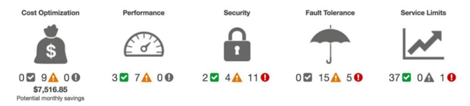AWS Pricing Calculator
Es una herramienta que permite explorar recursos de AWS y estimar costos para los casos de uso.
AWS Billing & Cost Management Dashboard
Es un servicio que permite pagar los gatos, monitorear el uso y analizar y controlar los gatos. Tiene distintas funcionalidades como
- Comparar mes a mes los gastos y obtener una predicción basado en los patrones de uso
- Ver el gasto mensual por cada servicio
- Ver el uso de la capa gratuita
- Acceder a cost explorer y crear budgets
- Comprar y administrar saving plans
- Publicar reports de uso y costo
Consolidated billing
Es una herramienta que permite agrupar las cuentas de distintas cuentas de AWS que se encuentren bajo una misma organización. Se pueden agrupar hasta máximo 4 cuentas y si es necesario aumentar se debe hablar con soporte. Se puede revisar el gasto de cada cuenta y agrupar gastos para calificar a descuentos por uso.
AWS Budgets
Es un servicio que permite crear budgets para planificar el uso de un servicio, los costos y las reservaciones. Se actualiza 3 veces al día para determinar que tan cerca estamos de nuestro uso actual con los gastos y el uso de la capa gratuita.
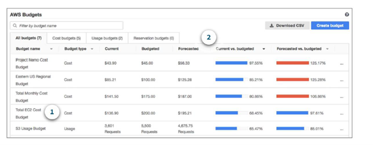AWS Cost Explorer
Es un servicio que permite visualizar, entender y administrar los costos y usos de los servicios en AWS a través del tiempo.
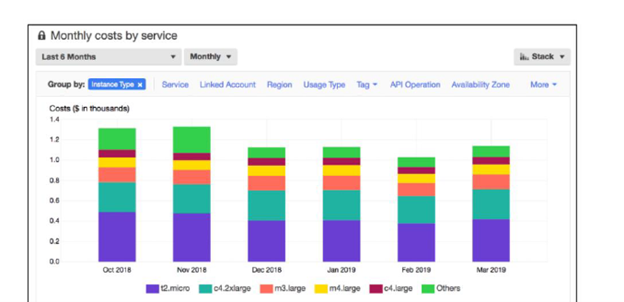Permite agrupar por tipo de instancia e incluso por tags por si queremos associar recursos a un mismo tag para evaluar sus costos.
AWS Support
AWS ofrece 4 tipos de planes de soporte dependiendo de la necesidad del cliente.
Basic
Es gratuito para todos los usuarios, incluye accedo a servicio al cliente, whitepapers, documentation y comunidades de soporte. Se puede acceder a preguntas de billing e incremento en los limites de servicios.
Se tiene un acceso limitado a los chequeo de Trusted Advisor, adicional a la Personal health dashboard que provee alertas cuando AWS presenta algún inconveniente.
Developer
Tiene acceso a:
- Guia de mejores practicas
- Client-side diagnostic tool
- • Soporte en la construcción de arquitecturas en la cual incluye como usar AWS offerings, features y servicios conjuntos
Business
Permite acceder a:
- • Guia a nivel de caso para las ofertas, features y servicios que mejor se acomoden a la necesidad del cliente
- • Todas las recomendaciones de Trusted Advisor
- • Soporte limitado de software de terceros, como sistemas operativos comunes y application stack componentes.
Enterprise
Es el plan de soporte más costoso, pero con más beneficios como:
- Guia en la arquitectura de aplicaciones, el cual es una relación de consultoría para apoyar a al compañía en casos de uso específicos y aplicaciones
- Infrastructure event management: Es un engagement de corto termino que ayuda a la compañía a tener un mejor entendimiento de los casos de usu
- Un technical Account Manager (TAM)
- SLA de 15 Minutos para resolución de conflictos
AWS Marketplace
Es un catalogo digital que permite tener un listado de software ofrecido por terceros, es utilizado para testear y comprar software que funciona en AWS.
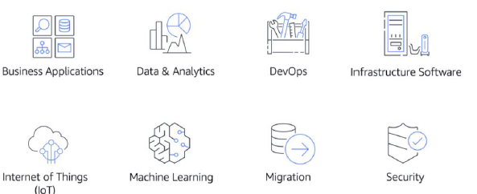AWS Cloud Adoption Framework
Es una guía enfocada en 6 focos llamados perspectivas, cada perspectiva lleva una serie de responsabilidades que permitirán una migración a la nube de manera organizada y beneficiosa.
- En la parte no IT: Business, People and Governance
- En la parte IT: Platform, Security y Operations.
Business se encarga de que la parte IT esté alineada con las necesidades de negocio
People se encarga de administrar la organización utilizando estrategias para la adopción.
Governance se encarga de alinear las habilidades y processos de IT com las estratégias de negocio.
Platform se encarga de utilizar los principios y patrones para la implementación de soluciones en la nube
Security se encarga de cumplir los objetivos de seguridad, visibilidad, control etc.
Operations se encarga de permitir,correr,usar,operar y recuperar cargas de trabajo IT al nivel de SLA acordado con los stakeholders.
Estrategias de Migración
- Rehosting:es un lift and shift, significa mover la aplicación y hacerla funcionar de manera igual
- Replatforming: Permite realizar optimizaciones basadas en la nube sin tener que cambiar el funcionamiento core de la aplicación.
- Refactoring/Re-architeching Es utilizada para cambiar toda la aplicación y ser cloud-native aprovechando todas las capacidades de los servicios de la nube
- Repurchasing:es hacer el cambio de licencias tradicionales hacia software as a service utilizando aws Marketplace
- Retaining es utilizando cuando no se puede migrar toda la infraestructura de una aplicación lo cual ciertos legacy services son mantenidos on-premise
- Retiring es utilizando se retiran servicios de la aplicación que ya no son utilizados o son reemplazados por otros servicios ya existentes
SnowFamily Members
Es una colección de dispositivos físicos utilizados para migrar información on-premise hacia la nube cuando existen limitantes a nivel de bandwidth y no se desea utilizar la red pública.
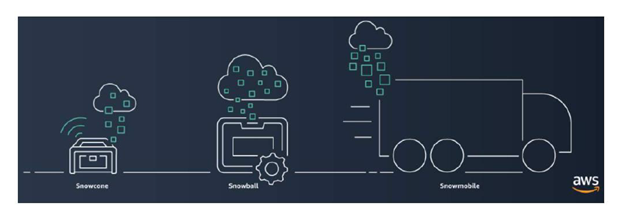
- Snowcone: 8Tb de información
- Snowball: 80Tb o 42Tb de información
- Snowmobile: 100Pb de información
Amazon Transcribe
Convierte voz a texto
Amazon Comprehend
Encuentra patrones en texto
Amazon Fraud Detector
Permite identificar posibles actividades fraudulentas online
Amazon Lex
Corazón de Alexa y permite construir chatbots de texto y voz
Amazon SageMaker
Permite build, entrenar y desplegar modelos de machine learning de manera fácil y rápida.
Amazon Augmented AI
Permite revisar workflows de machine learning use cases.
Amazon TextExtract
Permite extraer texto e información a partir de documentos
AWS Deepracer
Permite a los developers experimentar con reinforcement learning.
AWS Ground Station
Permite utilizar satélites on demand
AWS- Well architected Framework
Este framework ayuda a entender y diseñar,operar sistemas confiables,seguros,eficientes y económicos en la nube de AWS.
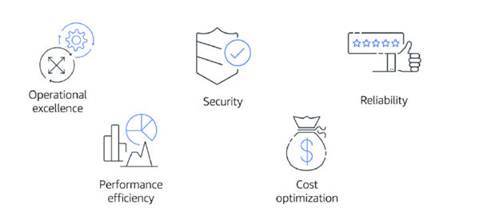Se centra en 5 pilares:
- Operational Excellence
- Security
- Reliability
- Performance Efficiency
- Cost Optimization
Ventajas de la computación en la nube
Existen 6 ventajas importantes al realizar la adopción de cloud
- Trade upfront expenses for variable expense
- Benefit from massive economies of scale
- Stop guessing capacity
- Increase speed and agility
- Stop spending money running and maintaining data centers
- Go global in minutes